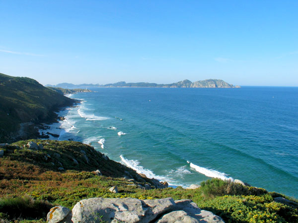

Cangas de Morrazo
Atrás
Caracola de Donón
Monte do Facho
Yacimientos arqueológicos

LIC (Lugar de Importancia Comunitario)
Faro de Cabo Home
Faro de Punta Robaleira
Playa Bandera Azul de Melide
Faro de Punta Subrido
Complejo dunar Barra - Nerga
Portada
Mapa